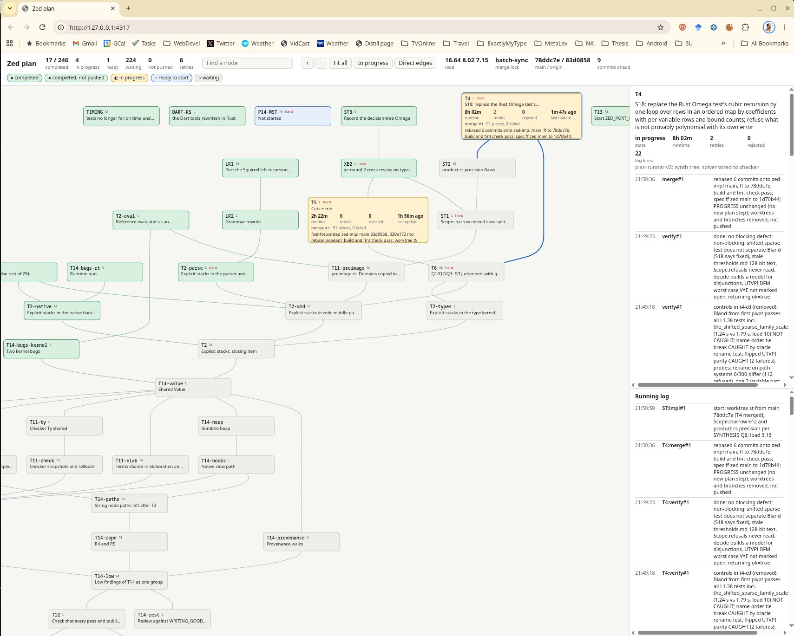
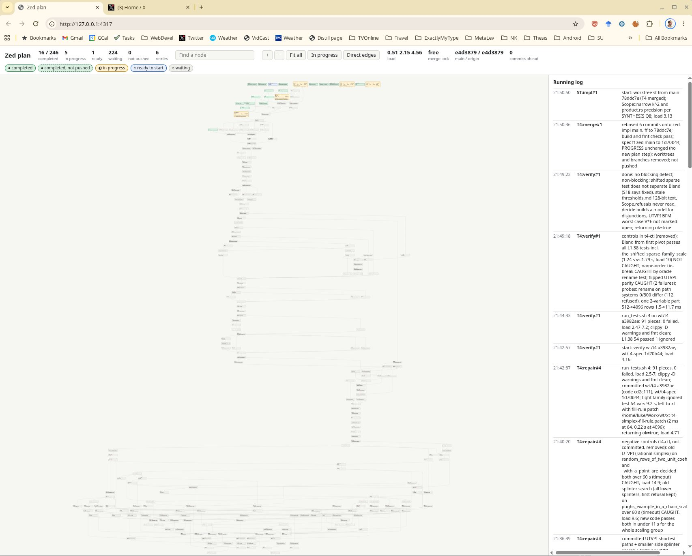

Xây ngôn ngữ Zed với đội quân agent AI
Bản dịch tiếng Việt của bài đăng X (note tweet) I'm building a new programming language, Zed bởi Luke Hutchison (@LH). Bài gốc không kèm thông báo bản quyền/giấy phép riêng. Bài dịch chỉ nhằm chia sẻ kỹ thuật; mọi quyền đối với nội dung gốc thuộc về tác giả. Tài khoản cập nhật về ngôn ngữ khi phát hành: @ZedLang.
TL;DR
- Luke Hutchison đang xây Zed — ngôn ngữ lập trình mới dựa trên lý thuyết phạm trù (category theory), với tự song song hóa đến giới hạn Amdahl, quản lý bộ nhớ không GC và không malloc/free thủ công, partial evaluation lan tỏa, và đơn vị đo trong hệ thống kiểu.
- Ông đã ấp ủ thiết kế hơn 20 năm (khoảng 200 trang ghi chú + mã cũ) nhưng chưa đủ thời gian để tự triển khai toàn bộ.
- Ông đưa toàn bộ tài liệu cho Opus để gom thành một kế hoạch chi tiết, rồi cho Claude, ChatGPT và Gemini phê bình chéo / meta-critique đến khi hội tụ, kèm kiểm tra all-pairs trên đặc tả.
- Các agent chia đặc tả thành chuỗi bước nhỏ theo thứ tự tôpô và DAG phụ thuộc; Opus dựng thêm visualizer realtime theo dõi trạng thái từng task trên DAG.
- Kết luận của ông: agent coding giờ đóng vai “đội quân” bù băng thông của một bộ não / 24 giờ một ngày — biến giấc mơ thiết kế dài hạn thành hệ thống đang được xây trước mắt.
Ba chế độ đọc: dùng 3 nút tròn ở góc dưới bên phải để chuyển nhanh (trên điện thoại, ba nút nằm thành một thanh ở cuối màn hình để không đè chữ bên phải). VI — bản dịch tiếng Việt đầy đủ, theo từng đoạn. EN — bản gốc tiếng Anh, không tách cụm. Cụm (mặc định, biểu tượng A gạch dưới) — tiếng Anh tách thành các cụm theo mệnh đề; rê chuột hoặc chạm vào một cụm để xem nghĩa tiếng Việt. Chạm lần nữa hoặc chạm ra ngoài để đóng; với cụm chứa liên kết, trên điện thoại chạm lần đầu để xem nghĩa, chạm lần hai để mở liên kết. Chế độ được ghi nhớ trên máy này; có thể mở thẳng bằng ?mode=vi, ?mode=en hoặc ?mode=chunk.
Tôi đang xây một ngôn ngữ lập trình mới, Zed (khi phát hành tôi sẽ đăng về nó tại @ZedLang).
I'm building a new programming language, Zed (when it's released I'll post about it at @ZedLang).
I'm building a new programming language, Zed (when it's released I'll post about it at @ZedLang).
Tôi đã làm việc trên ngôn ngữ này hơn 20 năm, nhưng chưa bao giờ dựng được nó, vì phạm vi quá tham vọng. Đây là một kiểu ngôn ngữ hoàn toàn mới dựa trên lý thuyết phạm trù (category theory), với các mục tiêu thiết kế cốt lõi là tự song song hóa chính xác đến giới hạn Amdahl; quản lý bộ nhớ tự động, không GC và không cần malloc/free thủ công; cùng việc dùng partial evaluation một cách lan tỏa để tăng sức mạnh của ngôn ngữ, bên cạnh nhiều tính năng rất độc đáo khác, chẳng hạn đơn vị đo (accel = 5 with units("m s^-2")) là một phần của hệ thống kiểu.
I've worked on this language for over 20 years, yet never built it because the scope was so ambitious. It's a totally new kind of language based on category theory, featuring automatic parallelization up to Amdahl's limit, automatic memory management without GC or manual malloc/free, pervasive partial evaluation, and unique features like physical units (accel = 5 with units("m s^-2")) built right into the type system.
I've worked on this language for over 20 years, yet never built it because the scope was so ambitious. It's a totally new kind of language based on category theory, featuring automatic parallelization up to Amdahl's limit, automatic memory management without GC or manual malloc/free, pervasive partial evaluation, and unique features like physical units (accel = 5 with units("m s^-2")) built right into the type system.

Visualizer DAG “Zed plan”: trạng thái task realtime (completed / in progress / waiting) và log chạy song song
Tôi đưa cho Opus 200 trang ghi chú thiết kế mà tôi đã biên soạn suốt 20 năm qua, cùng mã tôi đã viết, và nhờ Opus biên soạn mọi thứ tôi đã tạo đến nay thành một kế hoạch thống nhất, chi tiết. Sau đó tôi trải qua nhiều vòng phê bình chéo giữa Claude, ChatGPT và Gemini: để tất cả chúng phê bình nghiêm khắc, rồi meta-critique các phê bình của nhau, rồi cùng hợp tác gộp các phê bình thành kế hoạch cải tiến, đến khi hội tụ. Tôi cũng để các agent đối chiếu chéo mọi phần của đặc tả với mọi phần khác (so sánh all-pairs) để tìm mâu thuẫn, khoảng trống trong đặc tả, v.v. Rồi tôi để các agent biến đặc tả thành một chuỗi dài các bước tăng dần nhỏ (một thứ tự tôpô của việc gì phải dựng trước việc gì), cũng như cấu trúc DAG của các phụ thuộc nằm dưới thứ tự tôpô đó.
I fed Opus 200 pages of design notes I'd written over 20 years plus existing code, asking it to compile everything into one unified, detailed plan. Then I ran multiple critique rounds across Claude, ChatGPT, and Gemini—having them harshly critique, meta-critique each other's critiques, and merge improvements until convergence—alongside an all-pairs cross-check of the spec for contradictions and gaps, before turning it into a topological sequence of small incremental steps and an underlying dependency DAG.
I fed Opus 200 pages of design notes I'd written over 20 years plus existing code, asking it to compile everything into one unified, detailed plan. Then I ran multiple critique rounds across Claude, ChatGPT, and Gemini—having them harshly critique, meta-critique each other's critiques, and merge improvements until convergence—alongside an all-pairs cross-check of the spec for contradictions and gaps, before turning it into a topological sequence of small incremental steps and an underlying dependency DAG.
Tiếp theo tôi nhờ Opus dựng một visualizer hiện cho tôi mọi task trong DAG trong lúc các coding agent đang làm từng task, cập nhật realtime khi trạng thái task đổi (đang chạy / đã xong) — thứ tôi rất khuyến nghị khi bạn nhờ Opus làm một nhiệm vụ khổng lồ phức tạp, vì bạn thấy chính xác nó đang làm gì và khi nào.
Next, I had Opus build a realtime visualizer showing every task in the DAG as coding agents work through them (updating live between running and done)—something I highly recommend for huge Opus tasks so you can see exactly what it's doing and when.
Next, I had Opus build a realtime visualizer showing every task in the DAG as coding agents work through them (updating live between running and done)—something I highly recommend for huge Opus tasks so you can see exactly what it's doing and when.

Toàn cảnh DAG hàng trăm task trong “Zed plan”, kèm running log merge/verify/repair
Thật sự như phép màu khi thấy mọi thứ đang thành hình trước mắt, và thấy cách Opus xử lý DAG khổng lồ gồm các task phức tạp cùng các phụ thuộc chéo giữa chúng.
It genuinely feels like magic watching everything take shape before my eyes and seeing Opus handle a massive DAG of complex tasks with cross-dependencies.
It genuinely feels like magic watching everything take shape before my eyes and seeing Opus handle a massive DAG of complex tasks with cross-dependencies.
Thật khó tin với tôi khi Opus giờ đang trực tiếp xây những gì tôi đã mơ và ước tồn tại hơn 20 năm, nhưng chưa bao giờ có đủ giờ thức để triển khai! Bây giờ tôi có một đội quân làm việc cho mình, hoàn thành những gì tôi không làm nổi vì giới hạn băng thông của việc chỉ có một bộ não, và 24 giờ trong một ngày.
It's wild to me that Opus is now simply building what I've dreamed about for over 20 years but never had enough waking hours to implement! Now I have an army working for me, accomplishing what I couldn't due to the bandwidth limit of having one brain and 24 hours in a day.
It's wild to me that Opus is now simply building what I've dreamed about for over 20 years but never had enough waking hours to implement! Now I have an army working for me, accomplishing what I couldn't due to the bandwidth limit of having one brain and 24 hours in a day.
Thật là một kỷ nguyên của những điều kỳ diệu mà chúng ta đang sống.
What a time of miracles we are living in.
What a time of miracles we are living in.
Know-how & Insight
Ghi chú của người dịch — không phải lời của tác giả
Bài đăng ngắn nhưng phác một playbook dùng nhiều agent để “mở khóa” một dự án thiết kế dài hạn. Một số điểm có thể áp dụng trực tiếp cho developer / fintech ở Việt Nam:
- Giữ “kho thiết kế” trước khi nhờ agent code. Opus ở đây không thay thế 20 năm suy nghĩ: nó nhận ~200 trang ghi chú + mã sẵn có. Với hệ thống thanh toán, risk, hoặc core banking nội bộ, hãy chuẩn hóa ADR, RFC, diagram và invariant trước; agent mới có nguyên liệu để lập kế hoạch thay vì bịa đặc tả.
- Đa mô hình phê bình chéo, rồi hội tụ. Vòng Claude ↔ ChatGPT ↔ Gemini (critique → meta-critique → improvement plan) giảm “ảo tưởng đồng thuận” của một model duy nhất. Với PR lớn hoặc đặc tả API tiền tệ/hạch toán, có thể bắt hai agent độc lập review rồi bắt chúng phản biện lẫn nhau trước khi merge.
- All-pairs trên đặc tả. Kiểm tra từng phần đặc tả đối với mọi phần khác để tìm mâu thuẫn — gần với consistency review trong domain phức tạp (fee schedule vs ledger rules vs settlement window). Đắt về token nhưng rẻ hơn bug production.
- Topo sort + DAG nhiệm vụ nhỏ. Đừng bảo agent “viết cả compiler / cả module settlement”. Hãy ép nó xuất thứ tự tôpô và DAG phụ thuộc, rồi chạy từng nút có thể verify (test, typecheck, invariant). Đây cũng là cách tổ chức backlog monorepo fintech nhiều team.
- Visualizer / observability cho agent swarm. Dashboard realtime trạng thái task (in progress / completed / waiting) biến “black box agent” thành hệ thống quan sát được — tương tự CI dashboard hoặc workflow engine. Khi scale nhiều agent song song, không có dual-pane log + DAG thì rất khó biết đang kẹt ở đâu.
- Nhận ra nút thắt là băng thông con người, không phải ý tưởng. Bài này nhấn: thiết kế đã đủ; thiếu thời gian thức để implement. Với team nhỏ VN, ưu tiên dùng agent để thực thi kế hoạch đã chín (scaffold, test, migration nhỏ) thay vì để agent tự invent product từ đầu.
Lưu ý: Zed chưa phát hành tại thời điểm bài gốc; hãy theo @ZedLang cho cập nhật từ tác giả. Các con số tiến độ trên ảnh (ví dụ ~16–17/246 task) là snapshot lúc đăng, không phải cam kết roadmap công khai. Cập nhật ba chế độ đọc.
Mindmap
mindmap
root((Ngôn ngữ Zed))
Thiết kế 20 năm
Category theory
Tự song song hóa
Không GC không malloc tay
Partial evaluation
Đơn vị đo trong kiểu
Kế hoạch bằng Opus
200 trang ghi chú
Gộp thành kế hoạch
Phê bình chéo
Claude ChatGPT Gemini
Meta-critique
All-pairs đặc tả
DAG nhiệm vụ
Topo sort bước nhỏ
Visualizer realtime
Trạng thái task
Kết luận
Đội quân agent
Bù băng thông con người